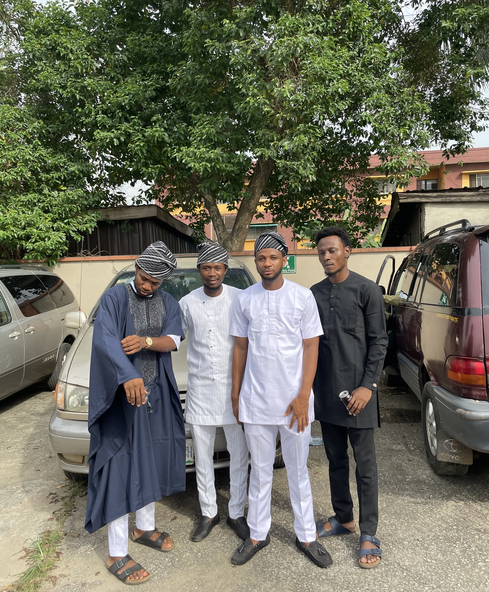
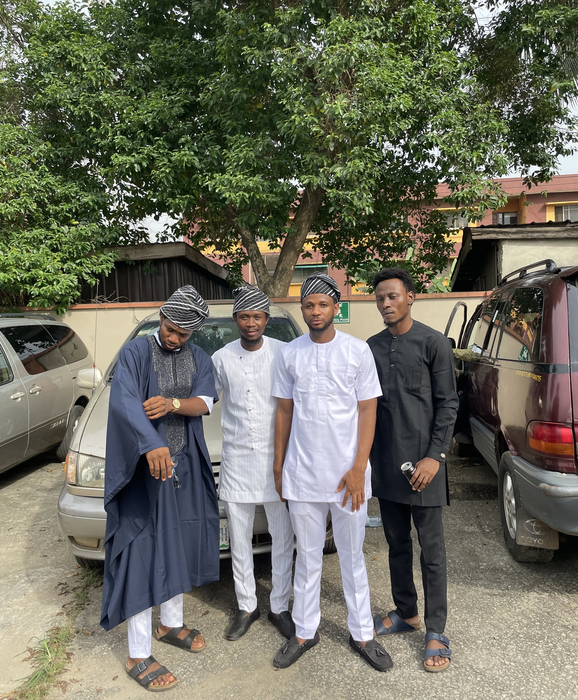

Ajanaku Dahunsi
Entry-level Software Engineer with a year of HTML, CSS, and JavaScript proficiency. Strong problem-solving, collaboration, and version control skills. Eager to enhance expertise through Internship.
Entry-level Software Engineer with a year of HTML, CSS, and JavaScript proficiency. Strong problem-solving, collaboration, and version control skills. Eager to enhance expertise through Internship.
 

As someone who considers himself a code maverick, I've always been captivated by the intricate dance of ones and zeros that power our digital world. I've spent countless hours deciphering the language of machines and turning complex problems into elegant solutions. I revel in the challenge of building robust and scalable systems and I don't just stop at the pixels. I bring my love for aesthetics and functionality to create interfaces that resonate with users. When I'm not immersed in the digital world, you'll likely find me working out, reading a book, watching a movie or taking long walks.

Quantity Surveying University of Lagos • 2023
Quantity Surveying Yaba College of Technology • 2017
Through out my tech journey so far, i have been able to develop some beginner and intermediate level projects using all of those amazing Technologies you saw in my tech stack section. Below you'll a description and an image of some of my finest works, click on the image to preview them!
Embark on a journey of discovery with Vagabond Navigator, my innovative travel companion web app! üåç‚úàÔ∏è Seamlessly blending cutting-edge React and Material-UI technologies, VagNav offers an interactive map and dynamic list to explore hidden gems and hotspots alike. Please note that due to the recent Travel Advisor API changes, some features may be undergoing an upgrade. Stay tuned for exciting updates as we navigate towards an even more exhilarating travel experience together! üó∫Ô∏èüåü
A React-powered surfing blog that invites you to explore premier surf destinations worldwide. Immerse yourself in vivid descriptions, captivating images, and detailed prices. Sign up for our newsletter to stay in the loop on the latest surf trends. Ride the virtual waves with us and experience the thrill of surfing at your fingertips!
Experience a hassle-free way of managing your daily tasks with the ToDo List App. This app is designed to make task management simpler and more efficient for you. Adding tasks to your list is easy and intuitive, helping you stay focused on your priorities. With the help of local storage, the ToDo List App ensures that your tasks are saved and accessible even after closing and reopening the application. So, you can always access your to-do list with just a click.

QUANTITY SURVEYING INTERN - Aden Engineering Nigeria limited
APPRENTICESHIP - Computer Hardware Repair